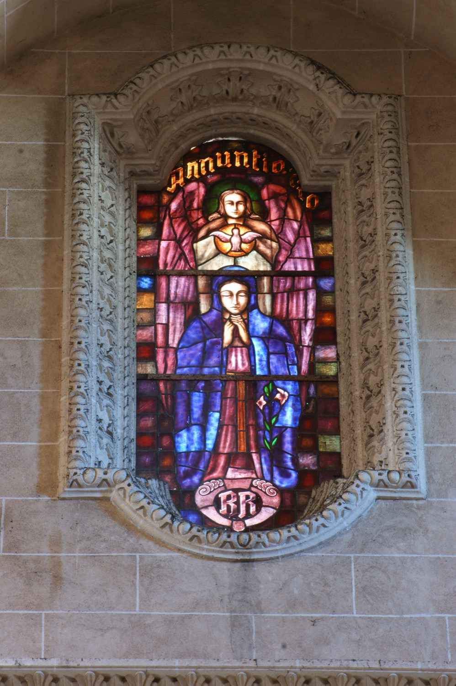

Esta vidriera representa el episodio de la Anunciación, cuando el arcángel san Gabriel anunció a la Virgen María que concebiría un hijo por obra del Espíritu Santo. En ella podemos ver a la Virgen María rezando de rodillas en primer plano, a san Gabriel de pie detrás de ella, al Espíritu Santo representado mediante una paloma, y un lirio que simboliza la pureza de la Virgen. Las iniciales de la parte inferior de la vidriera son las del donante que financió su realización.